Habilidades:
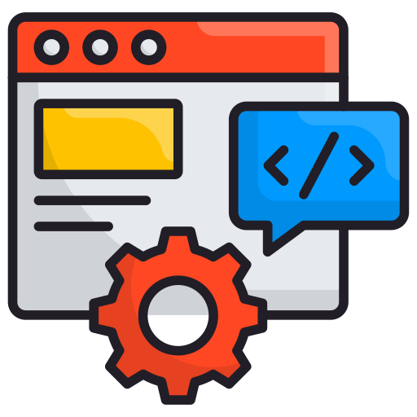
Desenvolvimento FullStack
Criação de aplicações completas, do front-end responsivo ao back-end eficiente e escalável.
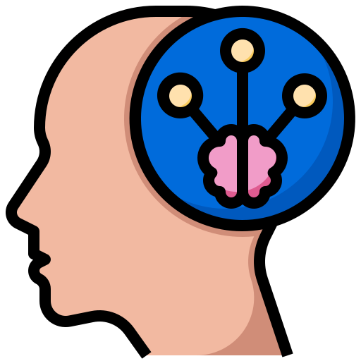
Lógica de Programação e Resolução de Problemas
Capacidade de analisar desafios e criar soluções limpas e funcionais.
UI/UX e Design de Interfaces
Desenvolvimento de interfaces modernas, intuitivas e focadas na experiência do usuário.
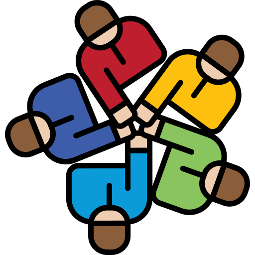
Trabalho em Equipe e Comunicação
Criação de aplicações completas, do front-end responsivo ao back-end eficiente e escalável.
Possuo domínio em tecnologias voltadas ao desenvolvimento FullStack, criando soluções digitais completas que unem design, performance e funcionalidade para transformar ideias em experiências modernas e acessíveis.

React

MySQL

Node.js
Certificados:
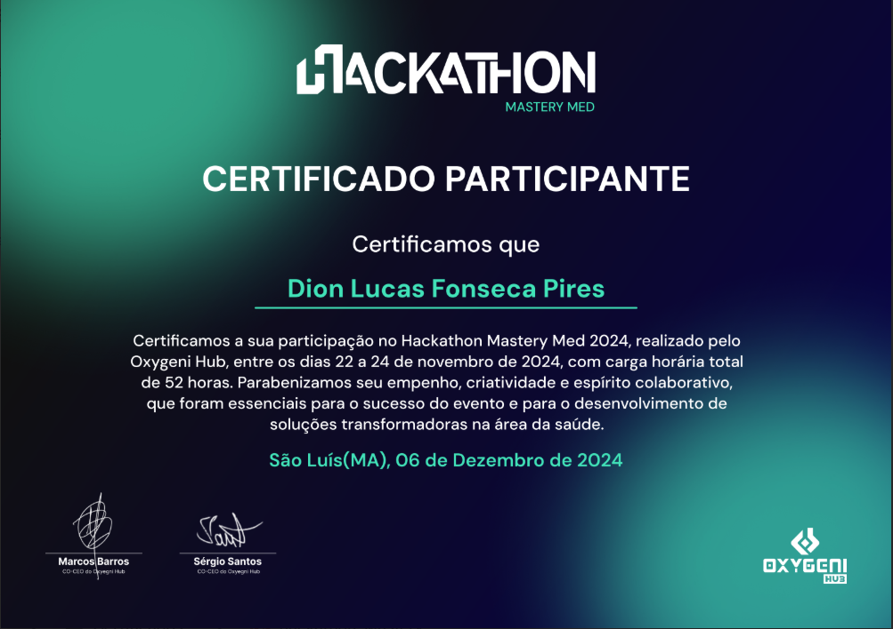
MASTERY MED
Certificado de participação no Hackathon Mastery Med 2024, com foco em inovação, criatividade e trabalho em equipe na área da saúde.
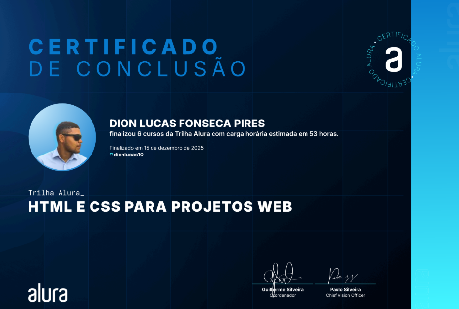
HTML e CSS para projetos web II
Certificado de participação na formação de HTML e CSS, com foco nos fundamentos do front-end e responsividade.
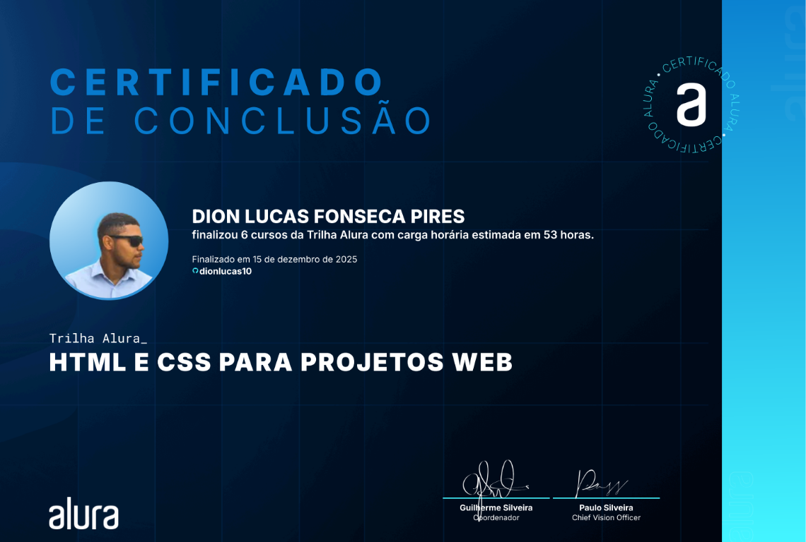
HTML e CSS para projetos web I
Certificado de participação na formação HTML e CSS, com foco em estruturação de páginas e responsividade no front-end.
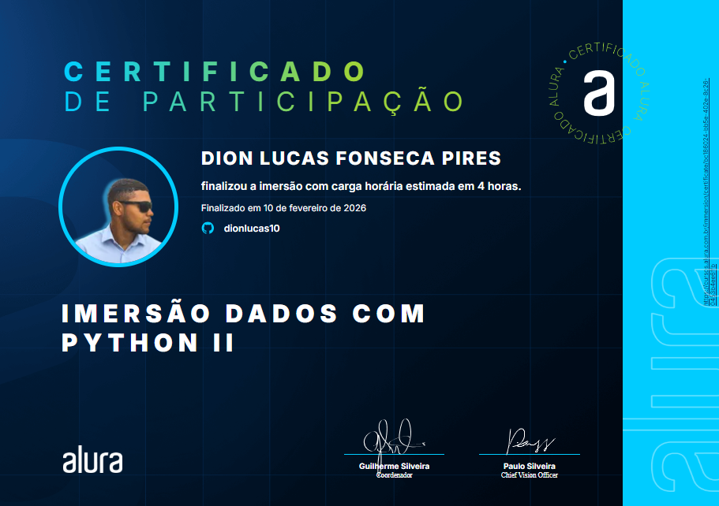
Imersão Dados com Python II
Certificado de participação na Imersão Dados com Python II (Alura), com foco em análise e manipulação de dados usando Python..
Projetos:
Alurabook 📚
Projeto web responsivo que simula uma vitrine de e-books, com foco em layout moderno, organização de conteúdo e boa experiência de navegação, aplicando conceitos de desenvolvimento front-end com HTML, CSS e JavaScript.
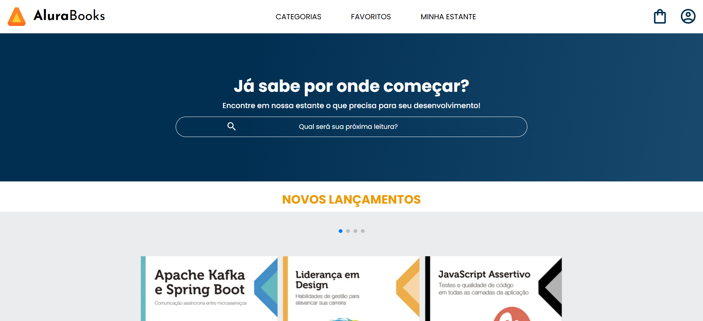
Calculadora 🧮
Site simples de desafio de programação que reúne várias calculadoras e funções matemáticas (como IMC, fatorial, conversões e tabuada), funcionando como um menu para realizar cálculos diretamente no navegador.
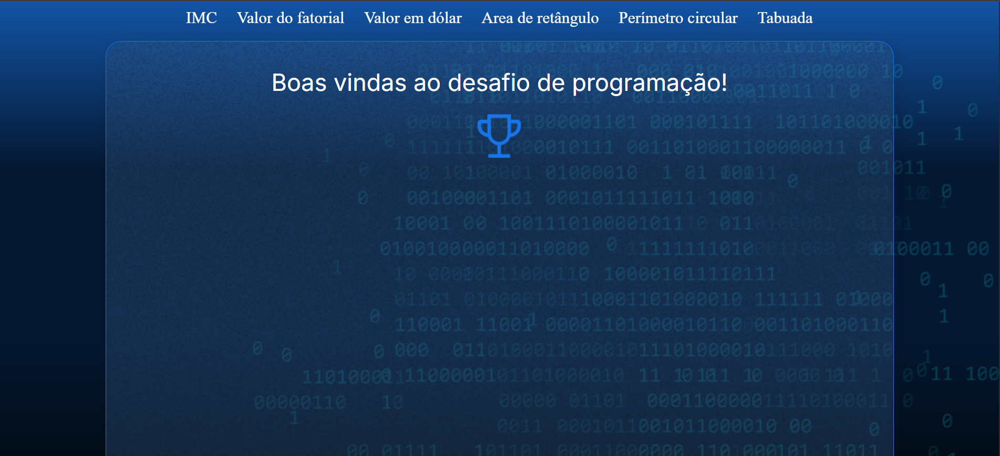
Jogo Possível 🎮
Projeto web interativo focado em lógica e experiência do usuário, com interface simples e dinâmica. Desenvolvido com HTML, CSS e JavaScript, aplicando conceitos de manipulação do DOM e interatividade para criar uma experiência envolvente no navegador.
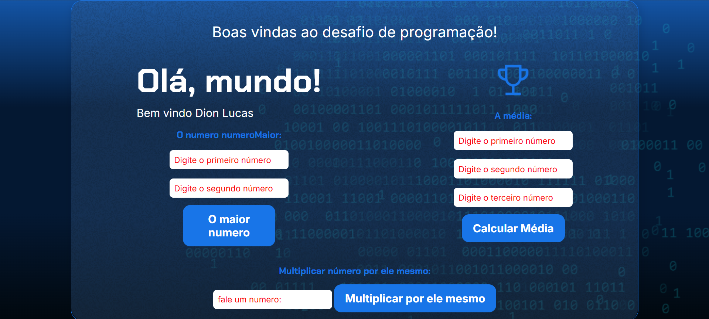
Jogo da Adivinhação 🎯
Projeto web desenvolvido como desafio da plataforma Alura, focado na criação de um jogo interativo de adivinhação de números, aplicando lógica de programação e conceitos de front-end com HTML, CSS e JavaScript.
Ailtur Turismo ✈️
Projeto web desenvolvido como meu primeiro freelance, focado na criação de um site institucional responsivo para apresentação de serviços turísticos, com layout moderno e navegação intuitiva, utilizando HTML, CSS e JavaScript.
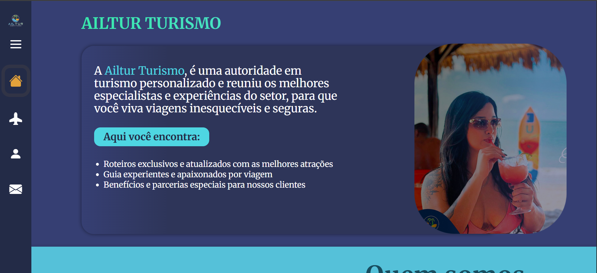
MusicMax 🎵
Projeto web focado na criação de uma interface moderna para uma plataforma de música, com layout responsivo e navegação intuitiva, aplicando conceitos de front-end com HTML, CSS e JavaScript.
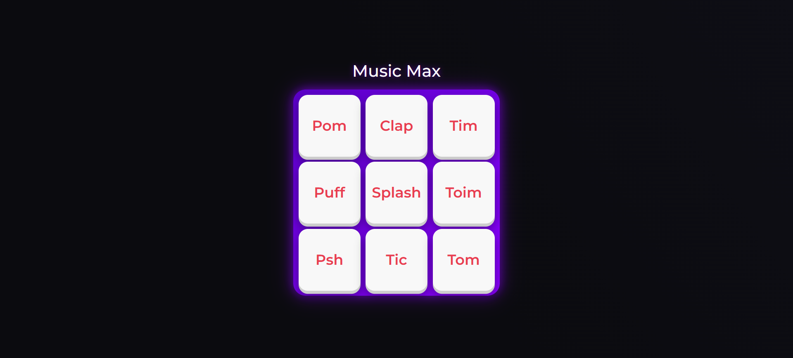
FOKUS 📌
Aplicação web baseada na técnica Pomodoro para auxiliar no foco e na organização do tempo. Desenvolvida com HTML, CSS e JavaScript, utilizando lógica e interatividade para criar uma experiência simples e funcional no navegador.
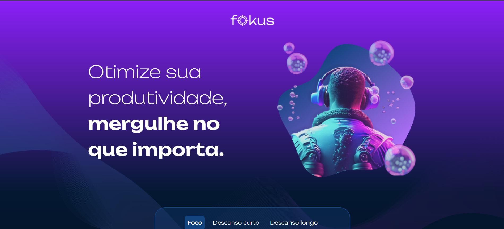